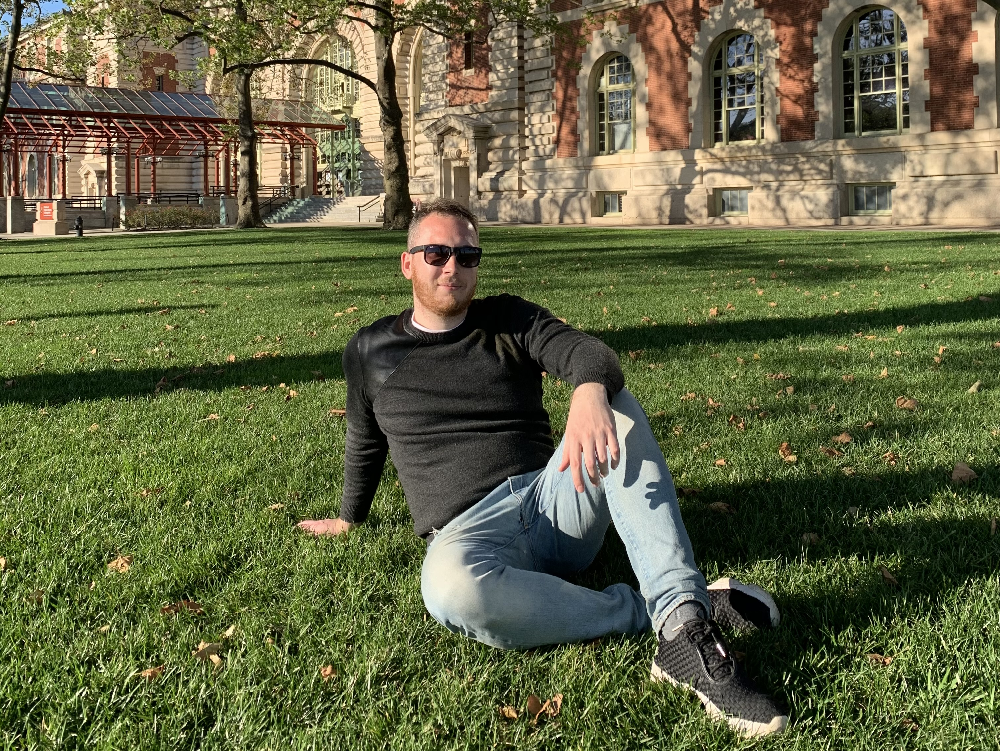

Бурков Евгений Александрович
Обо мне
Всем привет! Я Евгений, давайте знакомиться.
Я родился и вырос в городе Екатеринбурге. Мне 30 лет и я инженер-проектировщик по образованию.
С детства меня интересовали вещи, которые можно было разобрать, собрать по–новому.
Тяга с детства не остановилась и в школе, я учился в физико–математическом классе.
После школы я поступил на строительный факультет в Уральский Федеральный Университет и успешно закончил его.
С тех пор я работал как минимум в 2–х больших строительных компаниях.
Также у меня есть опыт работы в международной компании Ericsson
на должности инженера–конструктора.
Мне всегда было интересно развиваться, искать новые возможности для себя.
Мое образование:
- Общее среднее образование МОУ
Лицей №12
. - Полное высшее образование
УРФУ
. - Оконченные курсы изучения английского языка с присвоением уровня B2
Upper–Intermediate
.
Мой опыт работы:
Весь свой трудовой опыт я могу разделить на несколько этапов:
- Работа до окончания ВУЗа, которая включала:
- Подработку в школьные каникулы.
- Работу после студенческой практики в университете.
- Первая официальная работа на последнем курсе университета.
- После университета я набрался опыта. После этого уже были более интересные задачи и компании:
- Первая работа в компании, специализирующейся на металлоконструкциях.
- Работа в сфере строительства частных домов из деревянных материалов.
- Промежуточный итог можно подвести на данном этапе:
- Работа в международной комании АО
Ericsson
.

Мои хобби.
Самое главное мое хобби – это путешествия. За последние пять лет я побывал в девяти странах, как в Европе, так и в Америке. Баскетбол также является одним из моих самых больших интересов. С детства я очень любил эту игру и оранжевый мяч, по сей день раз в неделю я стаюильно играю. Также с недавнего времени я практикуюсь в игре на барабанах. Получаю большое удовольствие, всем советую!
Как я стал разработчиком.
- 24.03.2022 я принял решение стать разработчиком.
- 28.03.2022 я записался на курс front–end разработчика.
- 04.04.2022 я начал изучать HTML.